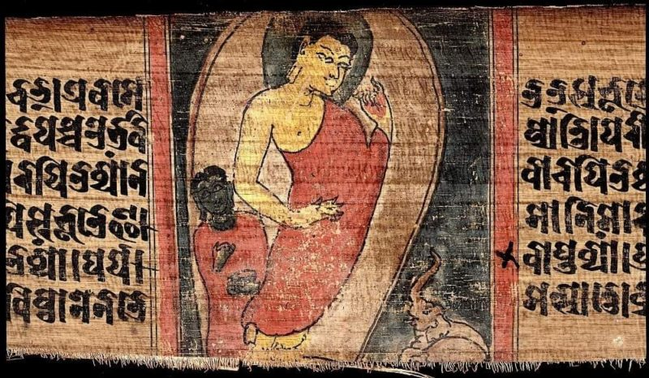

คำยืมจากภาษาสันสกฤต

ภาษาสันสกฤต เป็นภาษาที่มีความงดงาม ซับซ้อน และหรูหรา โดยหลั่งไหลเข้ามาในไทยผ่านศาสนาพราหมณ์-ฮินดูและวรรณคดีโบราณ เช่น รามเกียรติ์ มหาภารตะ ภาษาสันสกฤตมีคลังเสียงที่มากกว่าภาษาบาลี โดยเพิ่มสระเฉพาะอย่าง ไอ เอา ฤ ฤๅ และพยัญชนะยอดนิยมอย่าง ศ และ ษ เข้ามา รวมถึงนิยมใช้คำควบกล้ำที่ออกเสียงยากและตัว ร หัน (รร) ตัวอย่างคำที่เราคุ้นตา เช่น กษัตริย์ ศึกษา ปราชญ์ มนุษย์ ภรรยา และ ธรรม จะเห็นได้ว่าถ้อยคำของภาษาสันสกฤตจะให้ความรู้สึกที่อลังการและมีความเป็นพิธีการสูง ด้วยเหตุนี้ สังคมไทยจึงนิยมหยิบยืมภาษาสันสกฤตมาใช้ในภาษาราชการ วรรณคดี การราชาศัพท์ รวมถึงการนำมาใช้บัญญัติศัพท์วิชาการสมัยใหม่และการตั้งชื่อ-นามสกุล เพื่อเพิ่มความไพเราะและความเป็นสิริมงคล